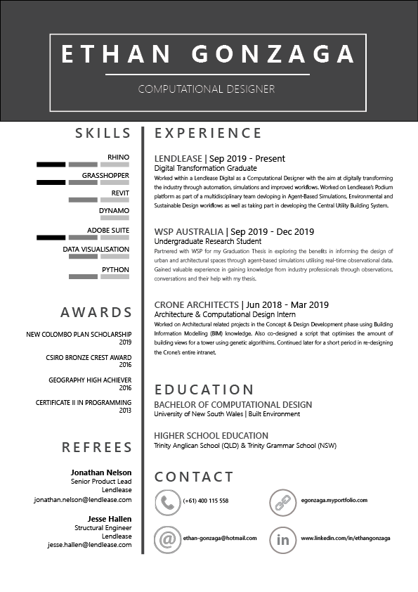

Education
Bachelor of Computational Design - University of New South Wales
Tools
Rhinoceros / Grasshopper
Revit
Solidworks
GIS
Figma
Adobe Suite
Python
Industry Experience
Lendlease
WSP
UNSW
Crone Architects
Fun Facts
Former Nationals Snowboarder
Enjoys Scuba Diving
Loves being in societies
My name's Ethan Gonzaga and I'm a multi-disciplined designer skilled in UI/UX, Architectural and Computational Design. I studied a Bachelor of Computational Design at the University of New South Wales.
I have a keen interest in User Experience and User Interfaces and designing based on logical conclusions and evidence to inform great designs and outcomes for stakeholders. I also heavily enjoy sustainable architecture and smart urbanism, I hope to change the industry in the way we design and build structures and cities while bringing my skills into the workplace where I can expand my skill set and gain valuable experience.
Resume
Donec eu porta 1
Duis id ultricies magna. Fusce placerat eu magna non euismod. Curabitur suscipit tristique massa, nec pretium tellus maximus nec. Pellentesque convallis viverra mauris quis sollicitudin. Praesent et libero in augue aliquam malesuada vitae ultricies neque. Donec rutrum diam sagittis diam viverra tincidunt.
Donec eu porta 2
Duis id ultricies magna. Fusce placerat eu magna non euismod. Curabitur suscipit tristique massa, nec pretium tellus maximus nec. Pellentesque convallis viverra mauris quis sollicitudin. Praesent et libero in augue aliquam malesuada vitae ultricies neque. Donec rutrum diam sagittis diam viverra tincidunt.
Donec eu porta 3
Duis id ultricies magna. Fusce placerat eu magna non euismod. Curabitur suscipit tristique massa, nec pretium tellus maximus nec. Pellentesque convallis viverra mauris quis sollicitudin. Praesent et libero in augue aliquam malesuada vitae ultricies neque. Donec rutrum diam sagittis diam viverra tincidunt.
Donec eu porta 4
Morbi mattis scelerisque nunc quis faucibus. Cras consectetur, nulla nec condimentum bibendum, est est accumsan ipsum, id vestibulum nulla odio vel massa. Duis pharetra augue ac bibendum eleifend. Curabitur id luctus lectus. Donec sem sem, egestas sit amet sagittis pellentesque, semper non libero.
Donec eu porta 5
Morbi mattis scelerisque nunc quis faucibus. Cras consectetur, nulla nec condimentum bibendum, est est accumsan ipsum, id vestibulum nulla odio vel massa. Duis pharetra augue ac bibendum eleifend. Curabitur id luctus lectus. Donec sem sem, egestas sit amet sagittis pellentesque, semper non libero.